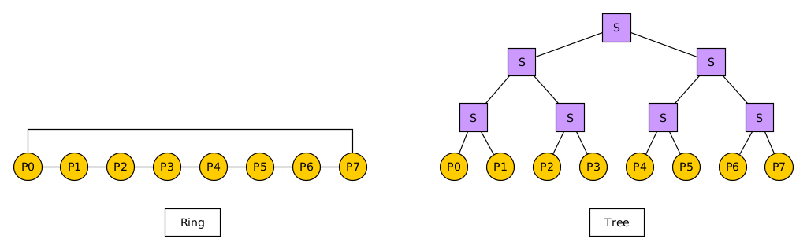
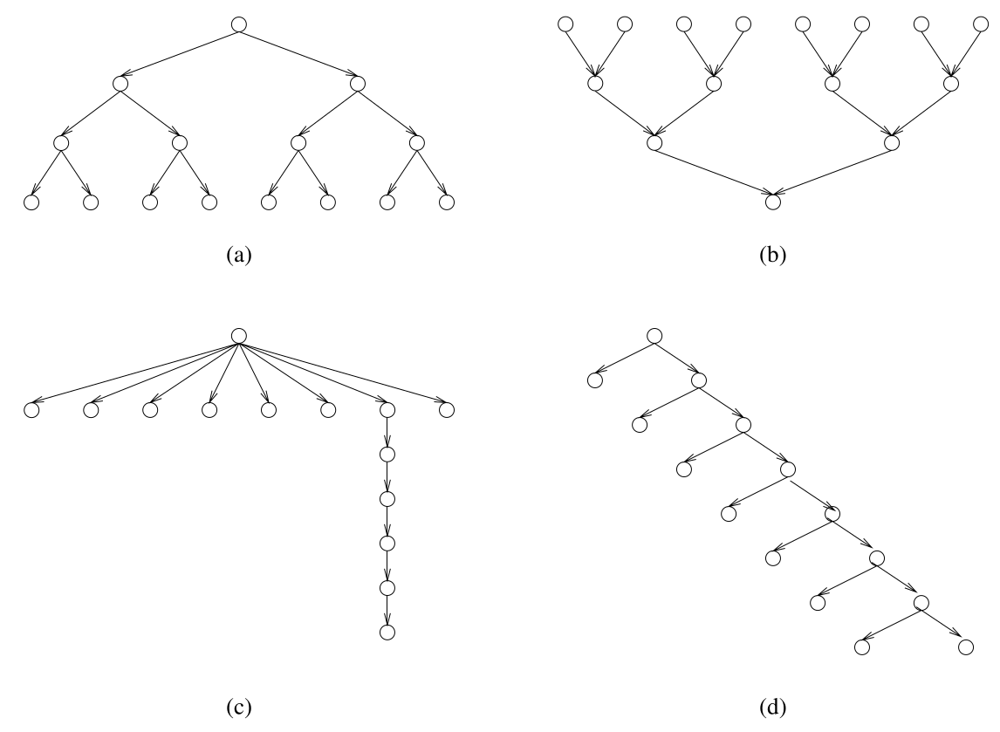
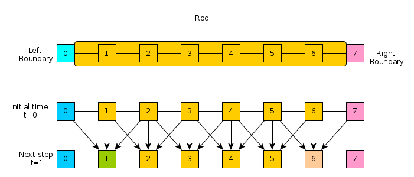

CMSC416 Assignment 1: Parallel Architecture and Theory
- Due: Thu 12-Feb-2026 by 11:59 pm
- Approximately 5% of total grade
- Submit to Gradescope in PDF format
- You may work in groups of 1 or 2 and submit one assignment per group.
Note: some of the math fonts used throughout the assignment may not display correctly. I have tested the display on Google Chrome and Mozilla Firefox and seen it work when connected to the network. Notify Prof Kauffman via email if it does not render properly.
CHANGELOG:
- Mon Feb 9 11:43:17 AM EST 2026
- A section clarifying the meaning of Speedup has been added to problem 3 as suggested in Post 26.
- Wed Feb 4 05:01:03 PM EST 2026
- Problem 3 had a typo in part (C); it should read "speedup over one processor…" (it formally incorrectly read process which created confusion for some students).
Table of Contents
- 1. (15pts) Problem 1: Store-and-forward Routing (Grama 2.26)
- 2. (10pts) Problem 2: Embedding a Ring Network in a Tree Network
- 3. (10pts) Problem 3: Task-dependence Graphs (Grama 3.2)
- 4. (15pts) Problem 4: Parallel Histogram
- 5. (10pts) Problem 5: Parallel One-to-All Broadcast in 2D Torus
- 6. (15pts) Problem 6: Bring the Heat
- 7. (15pts) Problem 7: C Proficiency / K-Means Preparation
- 8. (10pts) Work Disclosure
- 9. Submission Instructions
1 (15pts) Problem 1: Store-and-forward Routing (Grama 2.26)
Consider the routing of messages in a parallel computer that uses store-and-forward routing. In such a network, the cost of sending a single message of size \(m\) from \(P_{source}\) to \(P_{destination}\) via a path of length \(d\) is \(t_s + t_w \times d \times m\). An alternate way of sending a message of size m is as follows. The user breaks the message into \(k\) parts each of size \(m/k\), and then sends these \(k\) distinct messages one by one from \(P_{source}\) to \(P_{destination}\). For this new method, derive the expression for time to transfer a message of size \(m\) to a node \(d\) hops away under the following two cases:
- Assume that another message can be sent from \(P_{source}\) as soon as the previous message has reached the next node in the path.
- Assume that another message can be sent from \(P_{source}\) only after the previous message has reached \(P_{destination}\).
For each case, comment on the value of this expression as the value of \(k\) varies between 1 and \(m\). Also, what is the optimal value of \(k\) if \(t_s\) is very large, or if \(t_s = 0\)?
Clarification: To start sending any message, a cost of \(t_s\) must be paid. For example sending \(m=10\) words in its entirety costs \[t_s + t_w \times d \times 10\] Sending the same message broken into two 5-word chunks costs \[(t_s + t_w \times d \times 5) + (t_s + t_w \times d \times 5)\] if the sending does not overlap.
Example
To increase the clarity, below is a concrete example of the problem setting with communication according to both sets of assumptions. Studying it may help with visualizing the nature of the problem.
* ****** EXAMPLE PROBLEM PARAMETERS ****** *
m=10 : 10 words of data
k=2 : message in two parts, 5 words each [A5 B5]
d=3 : Source to Destination is 3 hops
* ****** A ASSUMPTIONS ****** *
After S sends A5, can immediately send B5 to "follow" it
TIME=0
S:0 ---- 1 ---- 2 ---- D:3
A5,B5
Initiate sending A5
TIME=1*5*t_w + t_s
S:0 ---- 1 ---- 2 ---- D:3
B5 A5
Initiate sending B5
TIME=2*5*t_w + t_s + t_s
S:0 ---- 1 ---- 2 ---- D:3
B5 A5
TIME=3*5*t_w + t_s + t_s
S:0 ---- 1 ---- 2 ---- D:3
B5 A5
TIME=4*5*t_w + t_s + t_s
S:0 ---- 1 ---- 2 ---- D:3
A5,B5
* ****** B ASSUMPTIONS ****** *
After sending A5, S must wait until it arrives at D before send B5.
TIME=0
S:0 ---- 1 ---- 2 ---- D:3
A5,B5
Initiate sending A5
TIME=1*5*t_w + t_s
S:0 ---- 1 ---- 2 ---- D:3
B5 A5
TIME=2*5*t_w + t_s
S:0 ---- 1 ---- 2 ---- D:3
B5 A5
TIME=3*5*t_w + t_s
S:0 ---- 1 ---- 2 ---- D:3
B5 A5
A5 Arrived
Initiate sending B5
TIME=4*5*t_w + t_s + t_s
S:0 ---- 1 ---- 2 ---- D:3
B5 A5
TIME=5*5*t_w + t_s + t_s
S:0 ---- 1 ---- 2 ---- D:3
B5 A5
TIME=6*5*t_w + t_s + t_s
S:0 ---- 1 ---- 2 ---- D:3
A5,B5
2 (10pts) Problem 2: Embedding a Ring Network in a Tree Network
Section 2.7 of Grama discusses a number techniques to evaluate how well one type of network interconnect may be embedded in another. Two important characteristics of such embedding are identified in Grama 2.7:
- Congestion: The maximum number of links in the source network mapped to a single link in the destination network.
- Dilation: The maximum number of links traversed in the destination network which correspond to a single link in the source network.
We briefly discussed this at a high level in lecture indicating that embedding a 2D Mesh into Hypercube is possible as the former has many fewer links than the latter. We were able to informally show that mapping a source 2D Mesh network to a destination Hypercube network would yield a Congestion of 1 (all links in the mesh had a unique link in the Hypercube) and a Dilation of 1 (adjacent procs in the Mesh were adjacent in the Hypercube).
Below is a diagram of an 8-node Ring network (linear array with wrap-around) and an 8-node Binary Tree network (with intermediary switches as squares).

Discuss how one can map/embed the Ring to the Tree. Be detailed, perhaps annotating the diagrams to show the specific mapping. Give the numeric values for Congestion and Dilation in this mapping.
Generalize your answer for a \(2^D\) node Ring mapped to a \(2^D\) node Tree. Provide an analytic expression for Congestion and Dilation. Informally justify your answers (no need for a formal proof).
NOTE: The mapping should NOT be overly complex. If you find your mapping is very difficult to describe in the pictures above, seek input from staff or colleagues to find a simpler approach.
3 (10pts) Problem 3: Task-dependence Graphs (Grama 3.2)
For the task graphs given in Figure 3.42 (below), determine the following:
- Maximum degree of concurrency.
- Critical path length.
- Maximum achievable speedup over one processor assuming that an arbitrarily large number of processors is available.
- The minimum number of processors needed to obtain the maximum possible speedup.
- The maximum achievable speedup if the number of processors is limited to 2, 4, and 8.
Assume that each task node takes an equal amount of time to execute.
Speedup is defined as the ratio of Serial Execution Time to Parallel Execution Time: \[Speedup = T_{serial} / T_{parallel}\] It is discussed in more detail in Grama 5.2.3 as it is the most common metric for evaluating parallel algorithms and will be discussed in more detail later in the course.
Example Speedup Calculations
- A set of tasks takes \(T_{serial} = 15\) time units to complete with one processor
- If using 2 processors, it can be completed in \(T_{parallel} = 10\) time units, this gives Speedup = 15 / 10 = 1.5
- If using 4 processors it can be completed in \(T_{parallel} = 5\) time units, this gives Speedup = 15 / 5 = 3.0
Figure 3.42. Task-dependency graphs for this Problem.

4 (15pts) Problem 4: Parallel Histogram
This problem is a variant of Grama 3.19 + 3.20 which discusses Bucket Sort but here we focus on the simpler task of computing Histograms (counts of values).
Consider parallelizing a simple histogram algorithm on a distributed memory computer.
- Input consists of an array
A[]ofNrandom integers in the range{0...(R-1)}. - The algorithm should compute the array of counts
H[]where elementH[i]is the total number of times integeriappeared in input arrayA[]. - All
Pprocessors on the parallel computer are assumed to have access to the entire arrayA[]which can be loaded from permanent storage (disk files). However if the sizeNgets large enough, only parts ofA[]can be held in memory for an individual processor. - At the end of the algorithm execution, at least one processor must
contain the entire array
H[]which may involve some communication. AsRgets large, processors may only be able to store part ofH[]in their memory.
EXAMPLE:
- Input:
R=4andA[]of sizeN=10isA[] = {0, 2, 1, 3, 2, 1, 1, 0, 0, 1} - Output:
H[]of sizeR=4isH[] = {3, 4, 2, 1}asH[i]is the number of occurrences ofithroughoutA[]
Describe two ways to decompose this problem into a parallel program. Compare these two.
- Describe a decomposition based on partitioning the input data
(i.e., the array
A[]) and an appropriate mapping onto p processors. Describe briefly how the resulting parallel algorithm would work. - Describe a decomposition based on partitioning the output data
(i.e., the array
H[]) and an appropriate mapping onto p processors. Describe briefly how the resulting parallel algorithm would work. - Discuss the advantages and disadvantages of these two parallel
formulations. Describe circumstances under which each is
preferred. Such circumstances should consider
Pthe number of processorsRthe number of different data possibilities (size ofH[])A[]the input array andNits size- Potentially also the cost to communicate between the processors
- In the common case that
A[]is much larger thanH[](N >> R) which of the two partitioning approaches is favorable? - Describe extreme cases such as
Nbeing so large thatN/Pelements ofA[]cannot fit in memory along with all ofH[]: what can be done in such cases? (Hint: hybrid partitioning approaches and/or reading from disk multiple times are potential remedies.)
5 (10pts) Problem 5: Parallel One-to-All Broadcast in 2D Torus
Assume processor 0 has a message that must be sent to all other
processors in a distributed memory parallel computer. Describe an
efficient algorithm to do this in a 2D Torus (wrap-around mesh) with
R rows and C columns.
Account for the following in your answers.
- A processor can send a message to any other processor. Any processor between the source and destination does not receive the message, only forwards it along the path. However, once a processor has actually received the message, it can subsequently be a source and send it to other processors.
- Processors can be indexed with 2D coordinates as in processor (0,2) sends a message to processor (5,4)
- Give rough pseudocode for how this algorithm will look
- Give a cost estimate of this communication in terms of the number or
rows
Rand columnsCin the network. The cost of a single communication between nodes that are \(d\) hops away is \[t_{single} = t_s + t_w \times m \times d\] You may assume thatRandCare powers of two in your analysis to simplify the expression for the total communication time \(t_{comm}\).
Hint: In lecture we discussed a related problem of reducing an answer to a single processor in a 2D mesh. Draw inspiration from that discussion.
6 (15pts) Problem 6: Bring the Heat
Consider a simple physical simulation of heat transfer. A rod of material is insulated except at its ends to which are attached two constant sources of heat/cold.

The rod is broken into discrete chunks, sometimes referred to as finite elements, and it is assumed that throughout each element the temperature is uniform. The reservoir elements of heat/cold at the left and right remain at a constant temperature. For the other elements, the temperature is updated at each time step by examining the temperature of its neighbors compared to itself. This dependence is indicated in the lower part of the diagram and the exact update for an element is given in the code below.
The following C code implements a simple version of this simulation.
A row of the matrix H contains the temperature of all elements in
the rod at a time step with the leftmost and rightmost elements
remaining constant. Ultimately, the program computes the entire matrix
H which contains temperatures of all elements at all time steps.
Examine this code carefully.
#include <stdio.h>
#include <stdlib.h>
// HEAT TRANSFER SIMULATION
//
// Simple physical simulation of a rod connected at the left and right
// ends to constant temperature heat/cold sources. All positions on
// the rod are set to an initial temperature. Each time step, that
// temperature is altered by computing the difference between a cells
// temperature and its left and right neighbors. A constant k
// (thermal conductivity) adjusts these differences before altering
// the heat at a cell. Use the following model to compute the heat
// for a position on the rod according to the finite difference
// method.
//
// left_diff = H[t][p] - H[t][p-1];
// right_diff = H[t][p] - H[t][p+1];
// delta = -k*( left_diff + right_diff )
// H[t+1][p] = H[t][p] + delta
//
// Substituting the above, one can get the following
//
// H[t+1][p] = H[t][p] + k*H[t][p-1] - 2*k*H[t][p] + k*H[t][p+1]
//
// The matrix H is computed for all time steps and all positions on
// the rod and displayed after running the simulation. The simulation
// is run for a fixed number of time steps rather than until
// temperatures reach steady state.
int main(int argc, char **argv){
int max_time = 50; // Number of time steps to simulate
int width = 20; // Number of cells in the rod
double initial_temp = 50.0; // Initial temp of internal cells
double L_bound_temp = 20.0; // Constant temp at Left end of rod
double R_bound_temp = 10.0; // Constant temp at Right end of rod
double k = 0.5; // thermal conductivity constant
double **H; // 2D array of temps at times/locations
// Allocate memory
H = malloc(sizeof(double*)*max_time);
int t,p;
for(t=0;t<max_time;t++){
H[t] = malloc(sizeof(double*)*width);
}
// Initialize constant left/right boundary temperatures
for(t=0; t<max_time; t++){
H[t][0] = L_bound_temp;
H[t][width-1] = R_bound_temp;
}
// Initialize temperatures at time 0
t = 0;
for(p=1; p<width-1; p++){
H[t][p] = initial_temp;
}
// Simulate the temperature changes for internal cells
for(t=0; t<max_time-1; t++){
for(p=1; p<width-1; p++){
double left_diff = H[t][p] - H[t][p-1];
double right_diff = H[t][p] - H[t][p+1];
double delta = -k*( left_diff + right_diff );
H[t+1][p] = H[t][p] + delta;
}
}
// Print results
printf("Temperature results for 1D rod\n");
printf("Time step increases going down rows\n");
printf("Position on rod changes going accross columns\n");
// Column headers
printf("%3s| ","");
for(p=0; p<width; p++){
printf("%5d ",p);
}
printf("\n");
printf("%3s+-","---");
for(p=0; p<width; p++){
printf("------");
}
printf("\n");
// Row headers and data
for(t=0; t<max_time; t++){
printf("%3d| ",t);
for(p=0; p<width; p++){
printf("%5.1f ",H[t][p]);
}
printf("\n");
}
return 0;
}
Answer the following questions about how to parallelize this code.
- A typical approach to parallelizing programs is to select a loop and split iterations of work between available processors. Describe how one might do this for the heat program. Make sure to indicate any loops for which this approach is not feasible and any which seem more viable to you.
- Describe how you would divide the data for the heat transfer problem among many processors in a distributed memory implementation to facilitate efficient communication and processing. Describe a network architecture that seems to fit this problem well and balances the cost of the network well.
7 (15pts) Problem 7: C Proficiency / K-Means Preparation
CODEPACK: kmeans-code.zip
| FILE | DESCRIPTION |
|---|---|
kmeans.py |
Python kmeans clustering program to convert to C |
python-demo.txt |
Demo of running the Python version, C version should produce similar results |
filestats.c |
Parsing routine to help process data files in C |
sample-mnist-data/ |
Directory with data files for clustering |
kmeans_serial.c |
CREATE this file with your C version |
In the next Assignment, you will be responsible for coding a parallel implementation of K-Means clustering. This will be coded in the C language. Many students may be rusty or uncertain about their C coding skills. To prepare for the parallel coding exercise, convert the a Python program to a C version. The provided Python code is downloadable with associated data files in the codepack linked at the top of this problem.
Brief Overview of K-Means Clustering
K-Means clustering will be discussed in lecture several times to introduce it and later to discuss various approaches to parallelizing the serial algorithm. For a additional details, examine the Wikipedia article on K-Means Clustering. Below is a brief overview of the central ideas.
The algorithm can be summarized as follows:
- Input: data + #of clusters desired - Output: assignment of each data to a cluster + cluster centers - Algorithm: Iterates between 1. Calculate cluster centers 2. Calculate cluster assignments Until no data changes clusters
Each point to be clustered is described as a vector of numerical features. In the below sample picture, each data has 2 such features so can be easily plotted in 2 dimensions. The figure starts with two random cluster centers, then iterates above between assigning data to clusters, then recomputing cluster centers, then assigning, etc.

Figure 1: Example of progression of K-means clustering algorithm. Source: K-Means by Chris Piech. Based on a handout by Andrew Ng.
K-means requires one to specify how many clusters to group data into. Our K-means clustering initially assigns each data randomly to one cluster. Then the cluster centers are computed by summing the features of each data in a cluster and dividing by the number of data in the cluster. Finally, each data is compared against each cluster center and re-assigned to it if it is closer than its current cluster's center. The distance can be a variety of metrics but Euclidean distance is common.
The algorithm iterates between calculating new cluster centers and then re-assigning each data to new clusters. Under very mild conditions, cluster assignments will converge and this can be detected by counting how many data are assigned to different clusters than in the last iteration. When this count is 0, the algorithm has converged.
For our application, we will be clustering small images of hand-written digits so the features for the intensities of pixels in the image. A small image file like this one:
Figure 2: Sample of a small hand-written digit in graymap
may have pixel data in 2 dimensions like this (here written in the Portable Gray Map [PGM] format):
P2 # file type 5 7 # 5 columns by 7 rows 15 # max intensity 15 0 0 0 0 0 0 10 15 15 0 0 14 0 0 0 0 15 15 9 0 4 0 0 12 3 0 13 14 9 0 0 0 8 0 0
Such a data point is written as a 5x7 = 35 element vector by concatenating the rows of pixels as in:
0 0 0 0 0 0 10 15 15 0 0 14 0 0 0 0 15 15 9 0 4 0 0 12 3 0 13 14 9 0 0 0 8 0 0
Our application will cluster such collections of such images. Each
image appears as its own line in a text file starting with a label as
a digit of 0, 1, 2,... 9. This is followed by a colon, then then
image pixels:
5 : 0 0 0 0 0 0 10 15 15 0 0 14 0 0 0 0 15 15 9 0 4 0 0 12 3 0 13 14 9 0 0 0 8 0 0 5 : 0 0 0 0 0 1 12 15 13 0 0 12 0 0 0 0 14 14 8 1 3 0 0 15 6 0 12 11 9 0 0 0 8 2 0 3 : 0 0 0 0 0 0 10 15 15 0 0 0 0 14 0 0 4 15 11 0 0 0 0 12 3 0 13 14 9 0 0 0 8 0 0 ...
The data we will be clustering are images from the well-known MNIST Database which are 28x28 pixel graymap images with a range of 0 for black to 255 for white. The original binary formats have been converted to text formats like those about for somewhat easier interpretability and to processing.
Notes On Implementation
- The Python version has 2 "classes" at the top which represent the
main datatype associated with the problem. These should become C
structsin the C version as standard C does not support classes and they are unnecessary in this case anyway. - All numerical calculations should be done in floating point format
using C's 32-bit
floattype. It is recommended for performance reasons that the integer pixel data be read in as floats so that one can avoid doing unnecessary conversions. - Python automatically allocates data and can extend its lists while C involves manual memory allocation. In this application, after setting up data from the input file, no further memory allocation is required so most of the application logic will be identical between the Python and the C versions.
- Mirror the functions and flow used in the Python version closely in
your C version. Some Pythonesque function such as
split()andappend()methods are not available in C. Instead, pre-allocating appropriate amounts of memory and using standard input functions likefscanf()will suffice. - When reading in data from the input files, it may useful to employ the following function which calculates the lines and total tokens in a data file. It is provided in the indicated source file in the problem codepack.
- Using this C function allows one to calculate how much memory must be allocated for the data structure that will hold the input file: each line of the input files starts with an integer then a colon then 784 integers (28x28 pixels).
Python Code
The Python code version is provided below but is also in the codepack.
Sample Runs of kmeans.py
A demo of the Python version is shown below.
Optional Correctness Tests
Correctness tests are provided for the Kmeans serial program but will not be checked during grading (though for Assignment 2, they will be).
The tests have the following features.
- Assumes that there is a compiled program named
kmeans_serialin the current directory - Behavior and Output for that program are identical to
kmeans.py - Checks the output and files created against expectations
- Uses the Valgrind memory checker to determine if any memory errors occur during the runs
- Produces output files in the
test-results/subdirectory that report failures - Are provided in the
testytest running script andtest_kmeans_serial.orgtest definition file - Run via the command
./testy test_kmeans_serial.org
Below is a session that shows a successful run of the tests.
>> ./testy test_kmeans_serial.org # run tests =========================================================== == test_kmeans_serial.org : Tests for kmeans_serial program == Running 5 / 5 tests 1) digits_all_1e2.txt 10 : ok 2) digits_all_1e2.txt 10 Valgrind : ok 3) digits_all_1e3.txt 13 : ok 4) digits_all_1e3.txt 13 Valgrind : ok 5) digits_3x7_2e3.txt 5 : ok =========================================================== RESULTS: 5 / 5 tests passed
Timing Results to Provide
Time both the provided Python version and your C version of the K-means clustering on Zaratan which is accessible to course students via
>> ssh USERID@login.zaratan.umd.edu
Setup instructions for connecting and interacting with Zaratan are provided in the Setup Guide.
Provide timing using the following commands on Zaratan:
## Time Python and C versions on Zaratan with these parameters ## dataset: sample-mnist-data/digits_3x7_2e3.txt ## numclust: 4 ################################################################################ ## TIME PYTHON VERSION on digits_3x7_2e3.txt 4 clusters >> time ./kmeans.py sample-mnist-data/digits_3x7_2e3.txt 4 outdir1 datafile: sample-mnist-data/digits_3x7_2e3.txt nclust: 4 savedir: outdir1 ndata: 2000 dim: 784 ==CLUSTERING: MAXITER 100== ITER NCHANGE CLUST_COUNTS 1: 1427 | 450 503 240 807 2: 521 | 247 535 247 971 ... TOT 465 518 450 567 2000 Saving cluster labels to file outdir/labels.txt Saving cluster centers to outdir/cent_0000.pbm ... real XXXXXX # include all output including these last timing numbers user XXXXXX sys XXXXXX ################################################################################ ## TIME C VERSION on digits_3x7_2e3.txt 4 clusters >> time ./kmeans_serial sample-mnist-data/digits_3x7_2e3.txt 4 outdir2 datafile: sample-mnist-data/digits_3x7_2e3.txt nclust: 4 savedir: outdir2 ndata: 2000 dim: 784 ==CLUSTERING: MAXITER 100== ITER NCHANGE CLUST_COUNTS 1: 1427 | 450 503 240 807 2: 521 | 247 535 247 971 ... TOT 465 518 450 567 2000 Saving cluster labels to file outdir2/labels.txt Saving cluster centers to outdir2/cent_0000.pbm ... real XXXXXX # include all output including these last timing numbers user XXXXXX sys XXXXXX
C is often used when speed is important for an application so expect a speed bump over the Python version. The size of the bump will vary but should be substantial in most cases.
Submission Notes
- Paste the entirety of your C code into the document that you have written your other answers in. If your code is spread across several files, include all of them.
- Also paste the timing results of your C version on the datasets indicated compared to the Python results.
- Your solution will not be run by graders, only manually inspected to determine if it appears sane.
- This serial version will serve as your starting point for A2 in which you must parallelize the code so failure to complete this problem now will put you at a disadvantage for the next Assignment. No serial C version will be provided to students for A2, only the Python version.
8 (10pts) Work Disclosure
Include at the end of your document a section titled "Work Disclosure" which has sections and content as indicated in the template below.
WORK DISCLOSURE
(A) Human Collaborators: Aside from the 1-2 people submitting this assignment, the following people contributed ideas and discussion to the completion of this work INCLUDING course staff members. (Write NONE if no collaborators were involved.)
- Person 1 <person1@email.com> helped understand Problem X and the meaning of …
- Person 2 <person2@email.com> helped debug Cod for Problem Y…
- etc.
(B) Resource Utilization: The following resources such as websites, course notes, artificial intelligence tools (LLMs/ChatBots/etc.) were utilized in the completion of this work. Include course materials such as textbooks and lecture slides as well. (Write NONE if no resources were used [which would be hard to believe]).
- Resource 1 is here https://some.resource.org/useful_stuff.html and provided help for Problem Z to understand ….
- Resource 2 is the book "Parallel Analysis" by Auth Or with chapter 8 helping a lot with Problem W
- Resource 3 is here https://airegurgitator.com and provided AI refinements for the writing of problem Q and helped debug code for Problem N.
- etc.
(C) Ownership of Work: I / We affirm that all parties listed below have contributed to each solution presented in this document. All parties are capable of describing how the solutions were derived, how they apply to the problem, and that they were created in accordance with the course's PRIME DIRECTIVE.
Signed,
NAME(S) OF SUBMITTERS
Completing this section with reasonable thoroughness will earn full credit. Failure to include this section may result in additional penalties aside from the loss of points indicated.
9 Submission Instructions
- Complete the problems in each section labelled Problem
- This is a pair assignment: you may select one partner to work with on this assignment as a group of 2. You may also opt to work alone as a group of 1.
- Only 1 member of your group should submit the HW Writeup on Gradescope. If you are working in a partnership, add your partner after submitting as described below.
Make sure the Writeup has all group member's information in it:
CMSC416 A1 Group of 2 Turanga Leela <tleela4@terpmail.umd.edu> Philip J Fry <pfry99@terpmail.umd.edu>
- Submit a PDF (portable document format, .pdf) of your work. Whatever program you write your answers in (Microsoft Word, Apple Words, Google Docs, Latex, etc.) make sure you can export or "save as" a PDF.
- Submit your work to Gradescope under Assignment 1
- Log into Gradescope
- Assignment 1
- Select your PDF for upload
- Use the Gradescope system to indicate which of your answers are on which page of your PDF submission - this will make things easier on your grader (you want a happy grader).
- After uploading, add your partner as a group member if you had one.
Picture Sequence of Uploading an Assignment
Course numbers in the diagrams may differ from the actual course; diagrams are for illustration purpose only.
Selecting a PDF to upload


Indicate problem answers on each page

Adding a Group Member on Gradescope
Submitter should edit the group associated with the submission

Find your partner in the search box

Ensure your partner is listed

Late Submission
As described in the Course Syllabus, late submissions are penalized as follows.
- On-time submissions receive no penalties
- Submitting 1-24 hours will result in the loss of 10% absolute credit
- Submitting 25-48 hours late will result in the loss 20% absolute credit
- No submissions will be accepted more than 48 hours after a deadline.